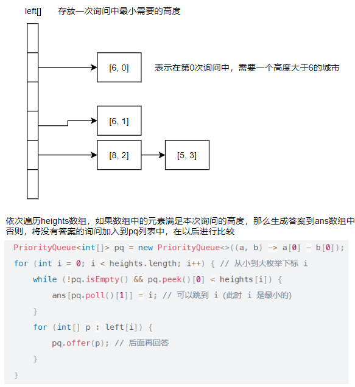

首先放出本次周赛的结果，水过了前俩道题目😭
思路
本题乍一看好像要用DP，脑海中想起来了那个做字符串DP 的下午，我疯狂的抓自己的头发😋…
但是仔细一看，我靠，这个题不就是求三个字符串的最长公共前缀的长度吗？
也就是说首先求出三个字符串的公共前缀的长度，然后使用三个字符串长度之和减去这个公共前缀长度的三倍，就是最终我们需要的答案了。
代码
1 2 3 4 5 6 7 8 9 10 11 12 class Solution { public int findMinimumOperations (String s1, String s2, String s3) { int end = 0 ; for (; end < s1.length() && end < s2.length() && s1.charAt(end) == s2.charAt(end); end++) ; String prefix = s1.substring(0 , end); for (end = 0 ; end < prefix.length() && end < s3.length() && prefix.charAt(end) == s3.charAt(end); end++); if (end == 0 ) return -1 ; int s = s1.length() + s2.length() + s3.length(); s = s - 3 * end; return s; } }
思路
我们可以使用dp来做这个题目。
设置dp[i]是当前位置，白球在前面，黑球在后面的最小步数。
如果第i个位置是白球，那么为了让本次符合条件，那么需要移动已知黑球有几个
dp[i] = dp[i - 1] + blank
如果第i个位置是黑球，那么我们不用动，
dp[i] = dp[i - 1]
我们只用到了dp[i], dp[i - 1],所以可以连这个一维数组都不用开了，直接使用常量就能满足了
代码
1 2 3 4 5 6 7 8 9 10 11 12 13 14 15 16 17 18 class Solution { public long minimumSteps (String ss) { char [] s = ss.toCharArray(); int n = s.length; long ans = 0 ; long blank = 0 ; long white = 0 ; for (int i = 0 ; i < n; i++) { if (s[i] == '1' ) { blank++; } else { ans += blank; white++; } } return ans; } }
思路
对于a = 14， b = 7的例子而言
如果a, b 的某一位都是1，那么保持不变
如果a, b的某一位都是0，那么都要反转为1
如果a, b的某一位不同，尽可能让大的变小，小的变大
如果a，b某一位不同，例如a = 14， b = 7的例子，对于最后的一位，那么我们可以看作是一个盈余的数字，如何进行分配才能让这俩个数字的乘积最大
根据基本不等式、拉格朗日定理、费马定理… 不管怎么样，我们知道让俩个数字尽可能的接近就好
如果最后的1分配给b，那么就是a = 14, b = 7, a * b = 98
如果最后的1分配给a，那么就是a = 15, b = 6, a * b = 90
代码
我使用java总是报错，可能是大整数溢出的问题，所以使用python代码
1 2 3 4 5 6 7 8 9 10 11 class Solution : def maximumXorProduct (self, a: int , b: int , n: int ) -> int : for i in range (n - 1 , -1 , -1 ): x = 1 << i if x & a & b != 0 : continue if (a & x) == 0 and (b & x) == 0 or a > b and (a & x) != 0 or b > a and (b & x) != 0 : a ^= x b ^= x mod = int (1e9 + 7 ) return a * b % mod
思路
完全没有思路哇😵， 直接给出灵神的思路 , 我再详细转述一下他的思路
数据结构的设计：

代码
1 2 3 4 5 6 7 8 9 10 11 12 13 14 15 16 17 18 19 20 21 22 23 24 25 26 27 28 29 30 31 32 33 34 35 class Solution { public int [] leftmostBuildingQueries(int [] heights, int [][] queries) { int n = heights.length; List<int []>[] left = new ArrayList [n]; for (int i = 0 ; i < n; i++) { left[i] = new ArrayList <int []>(); } int [] ans = new int [queries.length]; Arrays.fill(ans, -1 ); for (int i = 0 ; i < queries.length; i++) { int x = queries[i][0 ]; int y = queries[i][1 ]; if (x > y) { int t = x; x = y; y = t; } if (x == y || heights[x] < heights[y]) { ans[i] = y; } else { left[y].add(new int [] {heights[x], i}); } } PriorityQueue<int []> pq = new PriorityQueue <>((a, b) -> a[0 ] - b[0 ]); for (int i = 0 ; i < n; i++) { while (!pq.isEmpty() && pq.peek()[0 ] < heights[i]) { ans[pq.poll()[1 ]] = i; } for (int [] arr : left[i]) { pq.add(arr); } } return ans; } }